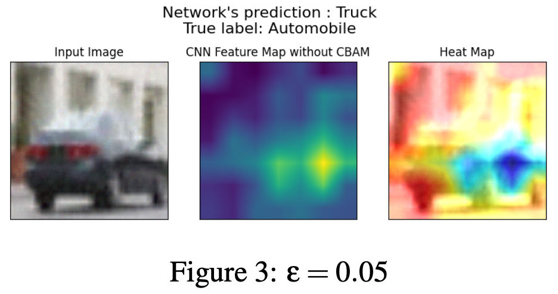

Safeguarding Attention With Diffusion Denoised Smoothing 
Adversarial images caused by perturbations are a classic case of exploiting a computer vision model to predict the wrong thing, even while the image l...